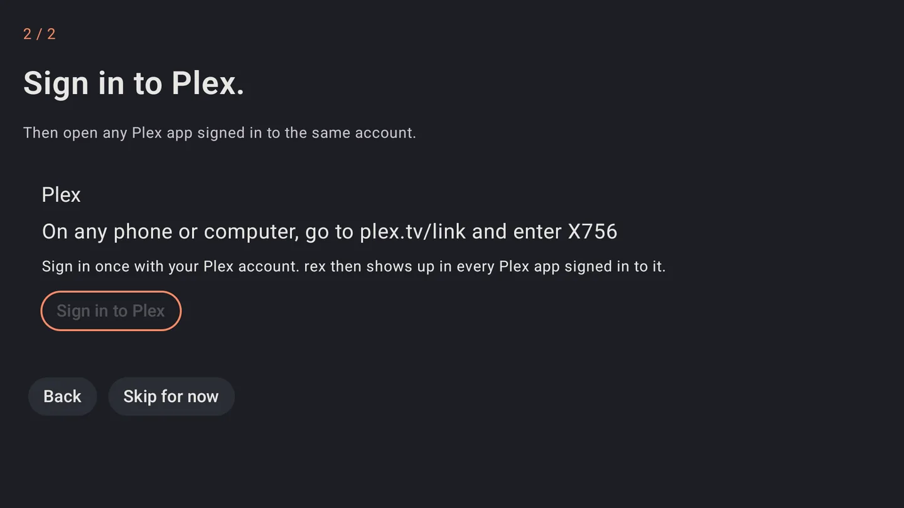

rex para Android
rex é um servidor de mídia para os apps do Plex que não possui nenhum arquivo. O rex para Android roda em um celular, tablet, Android TV, Google TV ou Fire TV, sem precisar de computador. Os apps do Plex nos seus dispositivos encontram o rex como qualquer outro servidor Plex e reproduzem a partir dele.
O que ele reproduz vem de addons. Ele começa com os filmes de domínio público do Internet Archive. Outros addons, como os seus addons do Stremio, YouTube e Spotify, são instalados dentro do app depois que você adiciona o repositório deles.
O rex para Android é gratuito. Quer colocar suas contas de debrid e Usenet nele também? O zurg+rex, um servidor Plex no seu celular com o zurg embutido, vem com um patrocínio: veja zurg+rex para Android.
Antes de começar
Ele ainda não está no Google Play. Você mesmo instala o arquivo do app (APK).
Passo 1. Baixe
No dispositivo, baixe o arquivo para o processador dele. Cada link sempre aponta para a versão mais nova:
Todas as versões e suas mudanças estão na página de releases.
Não tem certeza? Experimente arm64-v8a primeiro. Um único arquivo funciona tanto em celulares quanto em TVs.
Passo 2. Instale
Abra o arquivo baixado. O Android pergunta primeiro:
- Ele diz que não é permitido instalar apps desconhecidos a partir desta fonte. Toque em Configurações, ative Permitir desta fonte e volte.
- Toque em Instalar.
Em uma TV box sem navegador, baixe o arquivo com um app de download que consiga abrir APKs.
O que você deve ver. rex na sua lista de apps.
Passo 3. Inicie o rex
Abra o rex. A primeira tela diz Welcome to rex.
- Toque em Allow notifications e depois em Allow. O rex roda em segundo plano com uma notificação, e é por ela que você pode pará-lo.
- Toque em Let rex keep running in the background. Na lista que abrir, escolha rex e selecione Don't optimize. Em versões mais novas do Android é Allow background usage, depois Unrestricted. Volte para o rex. Os dois botões agora começam com um ✓.
- Name é como os apps do Plex chamam este servidor. Mude se quiser.
- Deixe Port em
32400. Se outro servidor Plex já estiver rodando neste dispositivo, o rex mostra Another app here already uses this port, maybe a Plex server. Try 32500. Digite32500. - Toque em Start rex.
O que você deve ver. 2 / 2 e Sign in to Plex.
Passo 4. Entre no Plex
Pressione Sign in to Plex. O rex mostra um código: On any phone or computer, go to plex.tv/link and enter it.
- On a phone or tablet o seu navegador também abre uma página do Plex que diz rex for Android would like to sign in to your Plex account. Entre por lá.
- On a TV acesse plex.tv/link no seu celular ou computador, entre na sua conta e digite o código.
Use a conta com a qual seus apps do Plex estão conectados. Você pode pressionar Skip for now e entrar depois em Status.

O que você deve ver. Signed in. rex shows up in the Plex apps as o nome do seu servidor. Pressione Done. Status mostra RUNNING e Ready for the Plex apps.
Passo 5. Assista em um app do Plex
Abra qualquer app do Plex conectado à mesma conta. Se o Plex estiver neste dispositivo, Status tem um botão Open Plex.
No Plex para Android, abra Libraries, depois All Libraries e então Movies, sob o nome do seu servidor. Os outros apps do Plex também listam a biblioteca sob o nome do servidor.
A primeira sincronização do Internet Archive demora um pouco: cerca de meia hora no nosso dispositivo de teste, enquanto o rex verifica cada filme. Status mostra Syncing até terminar e depois a contagem, como Ready · 97 titles. Dê play em qualquer filme.
Complementos
Addons lista o que você instalou. Cada um mostra seus títulos e quando foi sincronizado pela última vez. Os botões são Sync now, Settings, Log e Remove; no celular, deslize a linha de botões para o lado para ver todos. A chave Enabled desativa um addon sem removê-lo.
Os addons vêm de repositories: repositórios git que guardam addons. O app já começa com o rex-addons adicionado, que oferece os filmes de domínio público do Internet Archive, instalados desde o início. Para mais, adicione o rex-community-addons (veja Add a repository abaixo), que oferece:
Instale um. Em Repositories, pressione Addons ao lado de um repositório e depois Install embaixo do addon. O rex mostra quais sites ele consegue acessar e pergunta mais uma vez, e então começa a sincronizá-lo.
Entre na sua conta. Um addon que precisa da sua conta diz Sign in to start. Pressione o botão Sign in dele: acesse a página que ele indica em qualquer dispositivo e digite o código mostrado.
Adicione um repositório. Em Add a repository, digite o link (github.com/user/repo já basta) e pressione Add. Instale apenas de pessoas em quem você confia. Para criar seu próprio addon, veja o rex-addons.
Assista em outros dispositivos em casa
Todo app do Plex conectado na mesma conta encontra o rex na sua rede doméstica pelo nome: sua TV, outro celular, o Plex Web em um computador. Status mostra o endereço do rex em casa, como http://192.168.1.20:32400.
Para deixar a família assistir com as próprias contas do Plex, veja Compartilhe o rex com família e amigos.
Mantenha rodando
- rex roda enquanto o dispositivo estiver ligado. A Stop na notificação para o rex; em Status há Start, Stop e Restart.
- Em Settings, ative Start when this device turns on. Caso contrário, abra o rex e toque em Start depois de reiniciar.
- Alguns celulares ainda encerram apps em segundo plano. Don't kill my app explica o que o seu precisa.
- Para renomear o servidor, abra Settings, General em um app do Plex e altere Friendly name.
Limites
- Funciona em casa. Fora de casa, os apps do Plex precisam de um endereço HTTPS que chegue até o dispositivo, o que exige um port forward no seu roteador apontando para ele. Veja Use it outside your home.
- O dispositivo é o servidor. Mantenha ele ligado, no Wi-Fi ou Ethernet, e na tomada. Converter vídeo para um player que não consegue reproduzir um arquivo usa o hardware do próprio dispositivo e pode ser lento em uma caixa barata.
- Só o que os addons trazem. Ele não tem uma biblioteca de arquivos no próprio dispositivo.
- Ainda não está na Google Play. Para atualizar, instale o arquivo novo de the releases por cima do antigo, e o rex inicia de novo sozinho. Seu login e seus addons continuam.
Solução de problemas
Logs mostra o que o rex e os addons disseram recentemente, com chaves e senhas ocultas. Se o suporte pedir os logs, pressione Send logs to support: você vê tudo antes de qualquer coisa ser enviada, depois pressione Send e poste o código que você receber.
O que o app envia e para onde vai está na sua política de privacidade.
Travou? Pergunte no fórum rex-support no Discord.